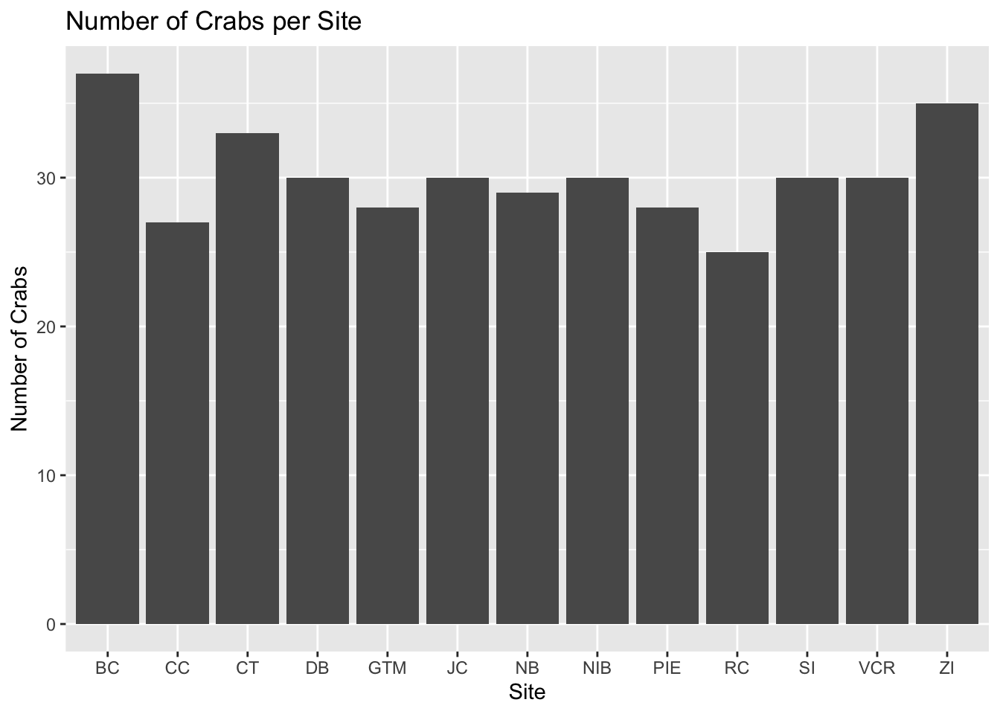

This chapter introduces fundamental data visualisation techniques using the grammar of graphics approach through ggplot2. We’ll use real ecological data to create and customise informative plots while building on the statistical concepts from the previous chapter.
Data Introduction
We’ll work with two datasets from the Long Term Ecological Research (LTER) Network:
Fiddler Crabs (pie_crab): Body size measurements of fiddler crabs, collected to study population characteristics.
Sugar Maples (hbr_maples): Tree growth measurements under different environmental conditions.
Grammar of Graphics with ggplot2
The ggplot2 package uses a layered approach to “paint a canvas” one component at a time:
Data: The dataset we’re visualising
Aesthetics: How variables map to visual elements (what goes on which axis)
Geometries: The type of plot that best shows your data patterns
Additional layers: Labels, themes, and customisation for clear communication
Building Plots Step by Step
Just like writing field methods, build your plots systematically:
Start with data (ggplot(data))
Map variables (aes(x = var1, y = var2))
Add plot type (geom_*())
Enhance with labels and themes
Core plot types
Histograms: to understand distributions
Histograms help us see patterns in measurements, like how animal sizes or plant heights are distributed in a population.
# Step 1: Start with our data and map size to x-axisggplot(pie_crab, aes(x = size)) +# Step 2: Create histogram with 30 bins for detailed view# More bins = more detail, but might show random variation# Fewer bins = smoother pattern, but might miss important detailsgeom_histogram(bins =30) +# Step 3: Add clear labels for scientific communicationlabs(x ="Carapace Width (mm)",y ="Count",title ="Distribution of Fiddler Crab Sizes" )
Think of a boxplot like a summary of crab sizes at each beach site - just as you might summarize different areas in an ecological survey. Each box tells a story about the crabs living there.
Let’s build this plot step by step:
# First, let's make a simple comparison between sites# Just like comparing different study areas in the fieldggplot(pie_crab, aes(x = site, y = size)) +geom_boxplot() +labs(x ="Site",y ="Carapace Width (mm)",title ="Fiddler Crab Sizes by Site" )
# Now let's make it easier to see differences# by adding colors - like marking different study zonesggplot(pie_crab, aes(x = site, y = size, fill = site)) +geom_boxplot() +labs(x ="Site",y ="Carapace Width (mm)",title ="Fiddler Crab Sizes by Site" )
The box in the middle shows where most of your crabs are (like finding the most common sizes in your sample). The line in the middle is the typical size for that site. This helps us quickly see if crabs are generally larger at some sites than others - just like you might find different sized plants in different parts of a forest.
### Bar Plots: Counting and Comparing
Bar plots help us answer questions like "How many samples did we collect?" or "What's the typical size at each site?" - common questions in field surveys.
First, let's count how many crabs we found at each site:
::: {.cell}
```{.r .cell-code}
# Count crabs at each site (like tallying field observations)
ggplot(pie_crab, aes(x = site)) +
geom_bar() + # geom_bar automatically counts for us
labs(
x = "Site",
y = "Number of Crabs",
title = "Number of Crabs per Site"
)

:::
Now, let’s look at the typical size of crabs at each site. Just like you might measure trees or plants in different areas to see where they grow best:
# Calculate average size for each site# Think of this like summarizing field measurementspie_crab %>%# Organize data by sitegroup_by(site) %>%# Calculate the average and its reliabilitysummarise(mean_width =mean(size, na.rm =TRUE), # average sizese =sd(size, na.rm =TRUE) /sqrt(n()) # how reliable is our average? ) %>%# Create the plotggplot(aes(x = site, y = mean_width)) +geom_col() +# make the bars# Add error bars to show reliabilitygeom_errorbar(aes(ymin = mean_width - se,ymax = mean_width + se ),width =0.2 ) +labs(x ="Site",y ="Average Carapace Width (mm)",title ="Typical Crab Size at Each Site" )
The height of each bar shows the average size, and the black lines (error bars) tell us how confident we are about that average - just like you might be more confident about your findings when you have more samples.
### Scatterplots: Exploring Relationships
Examine maple growth patterns:
::: {.cell}
```{.r .cell-code}
# Basic scatterplot
ggplot(hbr_maples, aes(x = year, y = stem_length)) +
geom_point() +
labs(
x = "Year",
y = "Stem Length (cm)",
title = "Sugar Maple Growth Over Time"
)
# Add trend line and group by treatmentggplot(hbr_maples, aes(x = year, y = stem_length,color = watershed)) +geom_point() +geom_smooth(method ="lm") +labs(x ="Year",y ="Stem Length (cm)",title ="Sugar Maple Growth by Watershed" )
`geom_smooth()` using formula = 'y ~ x'
:::
Essential Plot Modifications
Clear Labels and Titles
ggplot(pie_crab, aes(x = site, y = size)) +geom_boxplot() +labs(x ="Collection Site",y ="Carapace Width (mm)",title ="Fiddler Crab Size Distribution",subtitle ="Comparing sizes across collection sites",caption ="Data: PIE LTER" )
Appropriate Colours
# Using colour-blind friendly paletteggplot(pie_crab, aes(x = site, y = size,fill = site)) +geom_boxplot() +scale_fill_brewer(palette ="Set2") +labs(x ="Collection Site",y ="Carapace Width (mm)",title ="Fiddler Crab Sizes by Site (with colour)" )
Warning in RColorBrewer::brewer.pal(n, pal): n too large, allowed maximum for palette Set2 is 8
Returning the palette you asked for with that many colors